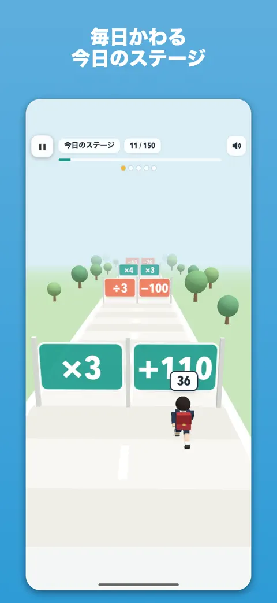

暗算ランゲーム（iPhone）
暗算ランナー
今日のコース、どこまで走れる？
みんなと勝負。
左右の計算ゲートの、得なほうをくぐって数をふやす。走りながら一瞬で暗算するランゲームです。毎日かわる「今日のステージ」は、みんな同じ長いコース。
- 毎日・みんな同じコース
- ランキング
- 全200ステージ
無料・広告あり／iPhone（iOS 18 以降）




← 横にスクロールできます →
RANKING
「今日のステージ」で、どこまで行けるか勝負
- みんな同じコース毎日かわる、とても長いコース。こえたゲートの数でくらべます。
- 今日と今週「今日」の順位と「今週の合計」、それに星の合計のランキングがあります。
- 名前を決めるだけサインインはいりません。ニックネームを決めるだけで参加でき、記録はいつでも消せます。
アウトになったとき、動画を見ると1回だけ復活できます（今日のステージのランキングは、復活の前までの記録です）。
こんな人におすすめ
- 計算や数字の遊びが好きな人
- 1回が短く、テンポよく遊べるゲームがほしい人
- 家族や友達と、記録をくらべっこしたい人
遊び方は3ステップ
- えらぶ画面の左か右をタップして、くぐるゲートを選びます。
- ふやす＋と×で数がふえ、−と÷でへります。0以下になったらアウト。
- ゴールゴールの数が大きいほど星がふえます（1ステージ星3つまで）。
特徴
- 200ステージ足し算・引き算から、かけ算・わり算へ
- 4つの計算＋ − × ÷ のゲート
- 命がけゲート片方をくぐると即アウト
- 毎日今日のステージとても長い、みんな同じコース
くわしい遊び方
走っている小学生の前に、2つのゲート（たとえば「+3」と「×2」）が出てきます。左右に動かして通るゲートを選び、数を大きくしながらゴールをめざします。
- ステージ：1〜200まで。最初は小さい数の足し算・引き算だけで、だんだんかけ算・わり算、大きな数、命がけゲートが出てきます。ゴールの数で ★1〜3
- アウトになるとき：数が0以下になるとアウトです。「命がけゲート」は片方を選ぶとその場でアウトになります。途中で損なゲートを選んでいると、あとの大きな引き算を越えられないこともあります
- 今日のステージ：毎日ひとつ、みんな同じコースを走ります。いくつゲートを越えられたかでランキングに参加できます
- 復活：アウトになったとき、動画広告を見ると1回だけその場から続けられます（見るかどうかは選べます）
よくある質問
無料ですか？
はい、無料でダウンロードして遊べます（広告あり）。App Store のページからどうぞ。
どの端末で使えますか？
iPhone（iOS 18 以降）で使えます。Android 版はありません。
途中でやめたい
走っている途中に左上の一時停止ボタンを押すと、つづける・はじめから・タイトルへもどる を選べます。
音を消したい
画面右上の ♪ ボタンで、音のオン・オフを切り替えられます。
次のステージが選べない
ステージはクリアすると次が開きます。★が少ないステージは、ゲートの選び方を変えるともっと大きな数でゴールできます。
記録を消したい・引き継ぎたい
記録はこの iPhone の中に保存しています（ランキングに名前をのせた場合は、ニックネームと記録だけを送ります。ランキングの画面の「ランキングから自分の記録を消す」でいつでも消せます）。アプリを削除すると記録も消えます。ほかの端末への引き継ぎにはまだ対応していません。
お問い合わせ
不具合やご要望は、メールでお知らせください。お使いの iPhone の機種と iOS のバージョンを書いていただけると助かります。